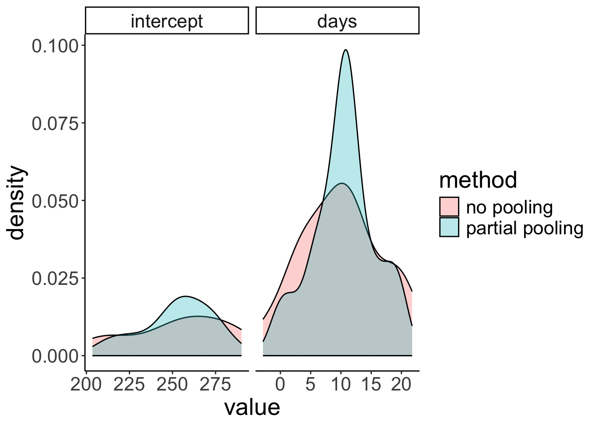

Chapter 18 Linear mixed effects models 2
18.1 Learning goals
- An
lmer()worked example- complete pooling vs. no pooling vs. partial pooling
- getting p-values
- checking model assumptions
- Simulating mixed effects models
- effect of outliers
- non-homogeneity of variance
- Simpson’s paradox
18.2 Load packages and set plotting theme
library("knitr") # for knitting RMarkdown
library("kableExtra") # for making nice tables
library("janitor") # for cleaning column names
library("broom.mixed") # for tidying up linear models
library("ggeffects") # for plotting marginal effects
library("emmeans") # for the joint_tests() function
library("lme4") # for linear mixed effects models
library("performance") # for assessing model performance
library("see") # for assessing model performance
library("tidyverse") # for wrangling, plotting, etc. 18.3 A worked example
Let’s illustrate the concept of pooling and shrinkage via the sleep data set that comes with the lmer package.
# load sleepstudy data set
df.sleep = sleepstudy %>%
as_tibble() %>%
clean_names() %>%
mutate(subject = as.character(subject)) %>%
select(subject, days, reaction)# add two fake participants (with missing data)
df.sleep = df.sleep %>%
bind_rows(tibble(subject = "374",
days = 0:1,
reaction = c(286, 288)),
tibble(subject = "373",
days = 0,
reaction = 245))Let’s start by visualizing the data
# visualize the data
ggplot(data = df.sleep,
mapping = aes(x = days, y = reaction)) +
geom_point() +
facet_wrap(~subject, ncol = 5) +
labs(x = "Days of sleep deprivation",
y = "Average reaction time (ms)") +
scale_x_continuous(breaks = 0:4 * 2) +
theme(strip.text = element_text(size = 12),
axis.text.y = element_text(size = 12))
The plot shows the effect of the number of days of sleep deprivation on the average reaction time (presumably in an experiment). Note that for participant 373 and 374 we only have one and two data points respectively.
18.3.1 Complete pooling
Let’s first fit a model the simply combines all the data points. This model ignores the dependence structure in the data (i.e. the fact that we have repeated observations from the same participants).
fit.complete = lm(formula = reaction ~ days,
data = df.sleep)
fit.params = tidy(fit.complete)
summary(fit.complete)
Call:
lm(formula = reaction ~ days, data = df.sleep)
Residuals:
Min 1Q Median 3Q Max
-110.646 -27.951 1.829 26.388 139.875
Coefficients:
Estimate Std. Error t value Pr(>|t|)
(Intercept) 252.321 6.406 39.389 < 2e-16 ***
days 10.328 1.210 8.537 5.48e-15 ***
---
Signif. codes: 0 '***' 0.001 '**' 0.01 '*' 0.05 '.' 0.1 ' ' 1
Residual standard error: 47.43 on 181 degrees of freedom
Multiple R-squared: 0.2871, Adjusted R-squared: 0.2831
F-statistic: 72.88 on 1 and 181 DF, p-value: 5.484e-15And let’s visualize the predictions of this model.
# visualization (aggregate)
ggplot(data = df.sleep,
mapping = aes(x = days, y = reaction)) +
geom_abline(intercept = fit.params$estimate[1],
slope = fit.params$estimate[2],
color = "blue") +
geom_point() +
labs(x = "Days of sleep deprivation",
y = "Average reaction time (ms)") +
scale_x_continuous(breaks = 0:4 * 2) +
theme(strip.text = element_text(size = 12),
axis.text.y = element_text(size = 12))
And here is what the model’s predictions look like separated by participant.
# visualization (separate participants)
ggplot(data = df.sleep,
mapping = aes(x = days, y = reaction)) +
geom_abline(intercept = fit.params$estimate[1],
slope = fit.params$estimate[2],
color = "blue") +
geom_point() +
facet_wrap(~subject, ncol = 5) +
labs(x = "Days of sleep deprivation",
y = "Average reaction time (ms)") +
scale_x_continuous(breaks = 0:4 * 2) +
theme(strip.text = element_text(size = 12),
axis.text.y = element_text(size = 12))
The model predicts the same relationship between sleep deprivation and reaction time for each participant (not surprising since we didn’t even tell the model that this data is based on different participants).
18.3.2 No pooling
We could also fit separate regressions for each participant. Let’s do that.
# fit regressions and extract parameter estimates
df.no_pooling = df.sleep %>%
group_by(subject) %>%
nest(data = c(days, reaction)) %>%
mutate(fit = map(data, ~ lm(reaction ~ days, data = .)),
params = map(fit, tidy)) %>%
ungroup() %>%
unnest(c(params)) %>%
select(subject, term, estimate) %>%
complete(subject, term, fill = list(estimate = 0)) %>%
pivot_wider(names_from = term,
values_from = estimate) %>%
clean_names()And let’s visualize what the predictions of these separate regressions would look like:
ggplot(data = df.sleep,
mapping = aes(x = days,
y = reaction)) +
geom_abline(data = df.no_pooling %>%
filter(subject != 373),
aes(intercept = intercept,
slope = days),
color = "blue") +
geom_point() +
facet_wrap(~subject, ncol = 5) +
labs(x = "Days of sleep deprivation",
y = "Average reaction time (ms)") +
scale_x_continuous(breaks = 0:4 * 2) +
theme(strip.text = element_text(size = 12),
axis.text.y = element_text(size = 12))
When we fit separate regression, no information is shared between participants.
18.3.3 Partial pooling
By usign linear mixed effects models, we are partially pooling information. That is, the estimates for one participant are influenced by the rest of the participants.
We’ll fit a number of mixed effects models that differ in their random effects structure.
18.3.3.1 Random intercept and random slope
This model allows for random differences in the intercepts and slopes between subjects (and also models the correlation between intercepts and slopes).
Let’s fit the model
fit.random_intercept_slope = lmer(formula = reaction ~ 1 + days + (1 + days | subject),
data = df.sleep)and take a look at the model’s predictions:
fit.random_intercept_slope %>%
augment() %>%
clean_names() %>%
ggplot(data = .,
mapping = aes(x = days,
y = reaction)) +
geom_line(aes(y = fitted),
color = "blue") +
geom_point() +
facet_wrap(~subject, ncol = 5) +
labs(x = "Days of sleep deprivation",
y = "Average reaction time (ms)") +
scale_x_continuous(breaks = 0:4 * 2) +
theme(strip.text = element_text(size = 12),
axis.text.y = element_text(size = 12))
As we can see, the lines for each participant are different. We’ve allowed for the intercept as well as the relationship between sleep deprivation and reaction time to be different between participants.
18.3.3.2 Only random intercepts
Let’s fit a model that only allows for the intercepts to vary between participants.
And let’s visualize what these predictions look like:
fit.random_intercept %>%
augment() %>%
clean_names() %>%
ggplot(data = .,
mapping = aes(x = days,
y = reaction)) +
geom_line(aes(y = fitted),
color = "blue") +
geom_point() +
facet_wrap(~subject, ncol = 5) +
labs(x = "Days of sleep deprivation",
y = "Average reaction time (ms)") +
scale_x_continuous(breaks = 0:4 * 2) +
theme(strip.text = element_text(size = 12),
axis.text.y = element_text(size = 12))
Now, all the lines are parallel but the intercept differs between participants.
18.3.3.3 Only random slopes
Finally, let’s compare a model that only allows for the slopes to differ but not the intercepts.
And let’s visualize the model fit:
fit.random_slope %>%
augment() %>%
clean_names() %>%
ggplot(data = .,
mapping = aes(x = days,
y = reaction)) +
geom_line(aes(y = fitted),
color = "blue") +
geom_point() +
facet_wrap(vars(subject), ncol = 5) +
labs(x = "Days of sleep deprivation",
y = "Average reaction time (ms)") +
scale_x_continuous(breaks = 0:4 * 2) +
theme(strip.text = element_text(size = 12),
axis.text.y = element_text(size = 12))
Here, all the lines have the same starting point (i.e. the same intercept) but the slopes are different.
18.3.4 Compare results
Let’s compare the results of the different methods – complete pooling, no pooling, and partial pooling (with random intercepts and slopes).
# complete pooling
fit.complete_pooling = lm(formula = reaction ~ days,
data = df.sleep)
df.complete_pooling = fit.complete_pooling %>%
augment() %>%
bind_rows(fit.complete_pooling %>%
augment(newdata = tibble(subject = c("373", "374"),
days = rep(10, 2)))) %>%
clean_names() %>%
select(reaction, days, complete_pooling = fitted)
# no pooling
df.no_pooling = df.sleep %>%
group_by(subject) %>%
nest(data = c(days, reaction)) %>%
mutate(fit = map(.x = data,
.f = ~ lm(reaction ~ days, data = .x)),
augment = map(.x = fit,
.f = ~ augment(.x))) %>%
unnest(c(augment)) %>%
ungroup() %>%
clean_names() %>%
select(subject, reaction, days, no_pooling = fitted)
# partial pooling
fit.lmer = lmer(formula = reaction ~ 1 + days + (1 + days | subject),
data = df.sleep)
df.partial_pooling = fit.lmer %>%
augment() %>%
bind_rows(fit.lmer %>%
augment(newdata = tibble(subject = c("373", "374"),
days = rep(10, 2)))) %>%
clean_names() %>%
select(subject, reaction, days, partial_pooling = fitted)
# combine results
df.pooling = df.partial_pooling %>%
left_join(df.complete_pooling,
by = c("reaction", "days")) %>%
left_join(df.no_pooling,
by = c("subject", "reaction", "days"))Let’s compare the predictions of the different models visually:
ggplot(data = df.pooling,
mapping = aes(x = days,
y = reaction)) +
geom_smooth(method = "lm",
se = F,
color = "orange",
fullrange = T) +
geom_line(aes(y = complete_pooling),
color = "green") +
geom_line(aes(y = partial_pooling),
color = "blue") +
geom_point() +
facet_wrap(~subject, ncol = 5) +
labs(x = "Days of sleep deprivation",
y = "Average reaction time (ms)") +
scale_x_continuous(breaks = 0:4 * 2) +
theme(strip.text = element_text(size = 12),
axis.text.y = element_text(size = 12))
To better see the differences between the approaches, let’s focus on the predictions for the participants with incomplete data:
# subselection
ggplot(data = df.pooling %>%
filter(subject %in% c("373", "374")),
mapping = aes(x = days,
y = reaction)) +
geom_smooth(method = "lm",
se = F,
color = "orange",
fullrange = T) +
geom_line(aes(y = complete_pooling),
color = "green") +
geom_line(aes(y = partial_pooling),
color = "blue") +
geom_point() +
facet_wrap(vars(subject)) +
labs(x = "Days of sleep deprivation",
y = "Average reaction time (ms)") +
scale_x_continuous(breaks = 0:4 * 2) +
theme(strip.text = element_text(size = 12),
axis.text.y = element_text(size = 12))
18.3.4.1 Coefficients
One good way to get a sense for what the different models are doing is by taking a look at the coefficients:
(Intercept) days
252.32070 10.32766 $subject
(Intercept) days
308 292.2749 10.43191
309 174.0559 10.43191
310 188.7454 10.43191
330 256.0247 10.43191
331 261.8141 10.43191
332 259.8262 10.43191
333 268.0765 10.43191
334 248.6471 10.43191
335 206.5096 10.43191
337 323.5643 10.43191
349 230.5114 10.43191
350 265.6957 10.43191
351 243.7988 10.43191
352 287.8850 10.43191
369 258.6454 10.43191
370 245.2931 10.43191
371 248.3508 10.43191
372 269.6861 10.43191
373 248.2086 10.43191
374 273.9400 10.43191
attr(,"class")
[1] "coef.mer"$subject
(Intercept) days
308 252.2965 19.9526801
309 252.2965 -4.3719650
310 252.2965 -0.9574726
330 252.2965 8.9909957
331 252.2965 10.5394285
332 252.2965 11.3994289
333 252.2965 12.6074020
334 252.2965 10.3413879
335 252.2965 -0.5722073
337 252.2965 24.2246485
349 252.2965 7.7702676
350 252.2965 15.0661415
351 252.2965 7.9675415
352 252.2965 17.0002999
369 252.2965 11.6982767
370 252.2965 11.3939807
371 252.2965 9.4535879
372 252.2965 13.4569059
373 252.2965 10.4142695
374 252.2965 11.9097917
attr(,"class")
[1] "coef.mer"$subject
(Intercept) days
308 253.9478 19.6264337
309 211.7331 1.7319161
310 213.1582 4.9061511
330 275.1425 5.6436007
331 273.7286 7.3862730
332 260.6504 10.1632571
333 268.3683 10.2246059
334 244.5524 11.4837802
335 251.3702 -0.3355788
337 286.2319 19.1090424
349 226.7663 11.5531844
350 238.7807 17.0156827
351 256.2344 7.4119456
352 272.3511 13.9920878
369 254.9484 11.2985770
370 226.3701 15.2027877
371 252.5051 9.4335409
372 263.8916 11.7253429
373 248.9753 10.3915288
374 271.1450 11.0782516
attr(,"class")
[1] "coef.mer"18.3.4.2 Shrinkage
In mixed effects models, the variance of parameter estimates across participants shrinks compared to a no pooling model (where we fit a different regression to each participant). Expressed differently, individual parameter estimates are borrowing strength from the overall data set in mixed effects models.
# get estimates from partial pooling model
df.partial_pooling = fit.random_intercept_slope %>%
coef() %>%
.$subject %>%
rownames_to_column("subject") %>%
clean_names()
# combine estimates from no pooling with partial pooling model
df.plot = df.sleep %>%
group_by(subject) %>%
nest(data = c(days, reaction)) %>%
mutate(fit = map(.x = data,
.f = ~ lm(reaction ~ days, data = .x)),
tidy = map(.x = fit,
.f = ~ tidy(.x))) %>%
unnest(c(tidy)) %>%
select(subject, term, estimate) %>%
pivot_wider(names_from = term,
values_from = estimate) %>%
clean_names() %>%
mutate(method = "no pooling") %>%
bind_rows(df.partial_pooling %>%
mutate(method = "partial pooling")) %>%
pivot_longer(cols = -c(subject, method),
names_to = "index",
values_to = "value") %>%
mutate(index = factor(index, levels = c("intercept", "days")))
# visualize the results
ggplot(data = df.plot,
mapping = aes(x = value,
group = method,
fill = method)) +
stat_density(position = "identity",
geom = "area",
color = "black",
alpha = 0.3) +
facet_grid(cols = vars(index),
scales = "free")Warning: Removed 1 row containing non-finite outside the scale range
(`stat_density()`).
18.3.5 Getting p-values
To get p-values for mixed effects models, I recommend using the joint_tests() function from the emmeans package.
model term df1 df2 F.ratio p.value
days 1 17.08 45.531 <.0001Our good ol’ model comparison approach produces a Likelihood ratio test in this case:
fit1 = lmer(formula = reaction ~ 1 + days + (1 + days | subject),
data = df.sleep)
fit2 = lmer(formula = reaction ~ 1 + (1 + days | subject),
data = df.sleep)
anova(fit1, fit2)refitting model(s) with ML (instead of REML)Data: df.sleep
Models:
fit2: reaction ~ 1 + (1 + days | subject)
fit1: reaction ~ 1 + days + (1 + days | subject)
npar AIC BIC logLik deviance Chisq Df Pr(>Chisq)
fit2 5 1813.2 1829.3 -901.62 1803.2
fit1 6 1791.6 1810.9 -889.82 1779.6 23.602 1 1.184e-06 ***
---
Signif. codes: 0 '***' 0.001 '**' 0.01 '*' 0.05 '.' 0.1 ' ' 118.3.6 Reporting results
18.3.6.1 Plotting marginal effects
# using the plot() function
ggpredict(model = fit.random_intercept_slope,
terms = "days",
type = "fixed") %>%
plot()
# using our own ggplot magic
df.plot = ggpredict(model = fit.random_intercept_slope,
terms = "days",
type = "fixed")
ggplot(data = df.plot,
mapping = aes(x = x,
y = predicted,
ymin = conf.low,
ymax = conf.high)) +
geom_ribbon(fill = "lightblue") +
geom_line(linewidth = 1)

18.4 Simulating a linear mixed effects model
To generate some data for a linear mixed effects model with random intercepts, we do pretty much what we are used to doing when we generated data for a linear model. However, this time, we have an additional parameter that captures the variance in the intercepts between participants. So, we draw a separate (offset from the global) intercept for each participant from this distribution.
# make example reproducible
set.seed(1)
# parameters
sample_size = 100
b0 = 1
b1 = 2
sd_residual = 1
sd_participant = 0.5
# generate the data
df.mixed = tibble(participant = rep(1:sample_size, 2),
condition = rep(0:1, each = sample_size)) %>%
group_by(participant) %>%
mutate(intercepts = rnorm(n = 1, sd = sd_participant)) %>%
ungroup() %>%
mutate(value = b0 + b1 * condition + intercepts + rnorm(n(), sd = sd_residual)) %>%
arrange(participant, condition)
df.mixed# A tibble: 200 × 4
participant condition intercepts value
<int> <int> <dbl> <dbl>
1 1 0 -0.313 0.0664
2 1 1 -0.313 3.10
3 2 0 0.0918 1.13
4 2 1 0.0918 4.78
5 3 0 -0.418 -0.329
6 3 1 -0.418 4.17
7 4 0 0.798 1.96
8 4 1 0.798 3.47
9 5 0 0.165 0.510
10 5 1 0.165 0.880
# ℹ 190 more rowsLet’s fit a model to this data now and take a look at the summary output:
# fit model
fit.mixed = lmer(formula = value ~ 1 + condition + (1 | participant),
data = df.mixed)
summary(fit.mixed)Linear mixed model fit by REML ['lmerMod']
Formula: value ~ 1 + condition + (1 | participant)
Data: df.mixed
REML criterion at convergence: 606
Scaled residuals:
Min 1Q Median 3Q Max
-2.53710 -0.62295 -0.04364 0.67035 2.19899
Random effects:
Groups Name Variance Std.Dev.
participant (Intercept) 0.1607 0.4009
Residual 1.0427 1.0211
Number of obs: 200, groups: participant, 100
Fixed effects:
Estimate Std. Error t value
(Intercept) 1.0166 0.1097 9.267
condition 2.0675 0.1444 14.317
Correlation of Fixed Effects:
(Intr)
condition -0.658Let’s visualize the model’s predictions:
fit.mixed %>%
augment() %>%
clean_names() %>%
ggplot(data = .,
mapping = aes(x = condition,
y = value,
group = participant)) +
geom_point(alpha = 0.5) +
geom_line(alpha = 0.5) +
geom_point(aes(y = fitted),
color = "red") +
geom_line(aes(y = fitted),
color = "red")
Let’s simulate some data from this fitted model:
# simulated data
fit.mixed %>%
simulate() %>%
bind_cols(df.mixed) %>%
ggplot(data = .,
mapping = aes(x = condition,
y = sim_1,
group = participant)) +
geom_line(alpha = 0.5) +
geom_point(alpha = 0.5)
Even though we only fitted random intercepts in this model, when we simulate from the model, we get different slopes since, when simulating new data, the model takes our uncertainty in the residuals into account as well.
Let’s see whether fitting random intercepts was worth it in this case:
# using chisq test
fit.compact = lm(formula = value ~ 1 + condition,
data = df.mixed)
fit.augmented = lmer(formula = value ~ 1 + condition + (1 | participant),
data = df.mixed)
anova(fit.augmented, fit.compact)refitting model(s) with ML (instead of REML)Data: df.mixed
Models:
fit.compact: value ~ 1 + condition
fit.augmented: value ~ 1 + condition + (1 | participant)
npar AIC BIC logLik deviance Chisq Df Pr(>Chisq)
fit.compact 3 608.6 618.49 -301.3 602.6
fit.augmented 4 608.8 621.99 -300.4 600.8 1.7999 1 0.1797Nope, it’s not worth it in this case. That said, even though having random intercepts does not increase the likelihood of the data given the model significantly, we should still include random intercepts to capture the dependence in the data.
18.4.1 The effect of outliers
Let’s take 20 participants from our df.mixed data set, and make one of the participants be an outlier:
# let's make one outlier
df.outlier = df.mixed %>%
mutate(participant = participant %>% as.character() %>% as.numeric()) %>%
filter(participant <= 20) %>%
mutate(value = ifelse(participant == 20, value + 30, value),
participant = as.factor(participant))Let’s fit the model and look at the summary:
# fit model
fit.outlier = lmer(formula = value ~ 1 + condition + (1 | participant),
data = df.outlier)
summary(fit.outlier)Linear mixed model fit by REML ['lmerMod']
Formula: value ~ 1 + condition + (1 | participant)
Data: df.outlier
REML criterion at convergence: 192
Scaled residuals:
Min 1Q Median 3Q Max
-1.44598 -0.48367 0.03043 0.44689 1.41232
Random effects:
Groups Name Variance Std.Dev.
participant (Intercept) 45.1359 6.7183
Residual 0.6738 0.8209
Number of obs: 40, groups: participant, 20
Fixed effects:
Estimate Std. Error t value
(Intercept) 2.7091 1.5134 1.790
condition 2.1512 0.2596 8.287
Correlation of Fixed Effects:
(Intr)
condition -0.086The variance of the participants’ intercepts has increased dramatically!
Let’s visualize the data together with the model’s predictions:
fit.outlier %>%
augment() %>%
clean_names() %>%
ggplot(data = .,
mapping = aes(x = condition,
y = value,
group = participant)) +
geom_point(alpha = 0.5) +
geom_line(alpha = 0.5) +
geom_point(aes(y = fitted),
color = "red") +
geom_line(aes(y = fitted),
color = "red")
The model is still able to capture the participants quite well. But note what its simulated data looks like now:
# simulated data from lmer with outlier
fit.outlier %>%
simulate() %>%
bind_cols(df.outlier) %>%
ggplot(data = .,
mapping = aes(x = condition,
y = sim_1,
group = participant)) +
geom_line(alpha = 0.5) +
geom_point(alpha = 0.5)
The simulated data doesn’t look like our original data. This is because one normal distribution is used to model the variance in the intercepts between participants.
18.4.2 Different slopes
Let’s generate data where the effect of condition is different for participants:
# make example reproducible
set.seed(1)
tmp = rnorm(n = 20)
df.slopes = tibble(
condition = rep(1:2, each = 20),
participant = rep(1:20, 2),
value = ifelse(condition == 1, tmp,
mean(tmp) + rnorm(n = 20, sd = 0.3)) # regression to the mean
) %>%
mutate(condition = as.factor(condition),
participant = as.factor(participant))Let’s fit a model with random intercepts.
boundary (singular) fit: see help('isSingular')Linear mixed model fit by REML ['lmerMod']
Formula: value ~ 1 + condition + (1 | participant)
Data: df.slopes
REML criterion at convergence: 83.6
Scaled residuals:
Min 1Q Median 3Q Max
-3.5808 -0.3184 0.0130 0.4551 2.0913
Random effects:
Groups Name Variance Std.Dev.
participant (Intercept) 0.0000 0.0000
Residual 0.4512 0.6717
Number of obs: 40, groups: participant, 20
Fixed effects:
Estimate Std. Error t value
(Intercept) 0.190524 0.150197 1.268
condition2 -0.001941 0.212411 -0.009
Correlation of Fixed Effects:
(Intr)
condition2 -0.707
optimizer (nloptwrap) convergence code: 0 (OK)
boundary (singular) fit: see help('isSingular')Note how the summary says “singular fit”, and how the variance for random intercepts is 0. Here, fitting random intercepts did not help the model fit at all, so the lmer gave up …
How about fitting random slopes?
This won’t work because the model has more parameters than there are data points. To fit random slopes, we need more than 2 observations per participants.
18.4.3 Simpson’s paradox
Taking dependence in the data into account is extremely important. The Simpson’s paradox is an instructive example for what can go wrong when we ignore the dependence in the data.
Let’s start by simulating some data to demonstrate the paradox.
# make example reproducible
set.seed(2)
n_participants = 20
n_observations = 10
slope = -10
sd_error = 0.4
sd_participant = 5
intercept = rnorm(n_participants, sd = sd_participant) %>%
sort()
df.simpson = tibble(x = runif(n_participants * n_observations, min = 0, max = 1)) %>%
arrange(x) %>%
mutate(intercept = rep(intercept, each = n_observations),
y = intercept + x * slope + rnorm(n(), sd = sd_error),
participant = factor(intercept, labels = 1:n_participants))Let’s visualize the overall relationship between x and y with a simple linear model.
# overall effect
ggplot(data = df.simpson,
mapping = aes(x = x,
y = y)) +
geom_point() +
geom_smooth(method = "lm",
color = "black")
As we see, overall, there is a positive relationship between x and y.
Call:
lm(formula = y ~ x, data = df.simpson)
Residuals:
Min 1Q Median 3Q Max
-5.8731 -0.6362 0.2272 1.0051 2.6410
Coefficients:
Estimate Std. Error t value Pr(>|t|)
(Intercept) -7.1151 0.2107 -33.76 <2e-16 ***
x 6.3671 0.3631 17.54 <2e-16 ***
---
Signif. codes: 0 '***' 0.001 '**' 0.01 '*' 0.05 '.' 0.1 ' ' 1
Residual standard error: 1.55 on 198 degrees of freedom
Multiple R-squared: 0.6083, Adjusted R-squared: 0.6064
F-statistic: 307.5 on 1 and 198 DF, p-value: < 2.2e-16And this relationship is significant.
Let’s take another look at the data use different colors for the different participants.
# effect by participant
ggplot(data = df.simpson,
mapping = aes(x = x,
y = y,
color = participant)) +
geom_point() +
geom_smooth(method = "lm",
color = "black") +
theme(legend.position = "none")
And let’s fit a different regression for each participant:
# effect by participant
ggplot(data = df.simpson,
mapping = aes(x = x,
y = y,
color = participant,
group = participant)) +
geom_point() +
geom_smooth(method = "lm",
color = "black") +
theme(legend.position = "none")
What this plot shows, is that for almost all individual participants, the relationship between x and y is negative. The different participants where along the x spectrum they are.
Let’s fit a linear mixed effects model with random intercepts:
Linear mixed model fit by REML ['lmerMod']
Formula: y ~ 1 + x + (1 | participant)
Data: df.simpson
REML criterion at convergence: 345.1
Scaled residuals:
Min 1Q Median 3Q Max
-2.43394 -0.59687 0.04493 0.62694 2.68828
Random effects:
Groups Name Variance Std.Dev.
participant (Intercept) 21.4898 4.6357
Residual 0.1661 0.4075
Number of obs: 200, groups: participant, 20
Fixed effects:
Estimate Std. Error t value
(Intercept) -0.1577 1.3230 -0.119
x -7.6678 1.6572 -4.627
Correlation of Fixed Effects:
(Intr)
x -0.621As we can see, the fixed effect for x is now negative!
fit.lmer %>%
augment() %>%
clean_names() %>%
ggplot(data = .,
aes(x = x,
y = y,
group = participant,
color = participant)) +
geom_point() +
geom_line(aes(y = fitted),
size = 1,
color = "black") +
theme(legend.position = "none")Warning: Using `size` aesthetic for lines was deprecated in ggplot2 3.4.0.
ℹ Please use `linewidth` instead.
This warning is displayed once every 8 hours.
Call `lifecycle::last_lifecycle_warnings()` to see where this warning was generated.
Lesson learned: taking dependence into account is critical for drawing correct inferences!
18.6 Session info
Information about this R session including which version of R was used, and what packages were loaded.
R version 4.4.2 (2024-10-31)
Platform: aarch64-apple-darwin20
Running under: macOS Sequoia 15.2
Matrix products: default
BLAS: /Library/Frameworks/R.framework/Versions/4.4-arm64/Resources/lib/libRblas.0.dylib
LAPACK: /Library/Frameworks/R.framework/Versions/4.4-arm64/Resources/lib/libRlapack.dylib; LAPACK version 3.12.0
locale:
[1] en_US.UTF-8/en_US.UTF-8/en_US.UTF-8/C/en_US.UTF-8/en_US.UTF-8
time zone: America/Los_Angeles
tzcode source: internal
attached base packages:
[1] stats graphics grDevices utils datasets methods base
other attached packages:
[1] lubridate_1.9.3 forcats_1.0.0 stringr_1.5.1
[4] dplyr_1.1.4 purrr_1.0.2 readr_2.1.5
[7] tidyr_1.3.1 tibble_3.2.1 ggplot2_3.5.1
[10] tidyverse_2.0.0 see_0.9.0 performance_0.12.4
[13] lme4_1.1-35.5 Matrix_1.7-1 emmeans_1.10.6
[16] ggeffects_2.0.0 broom.mixed_0.2.9.6 janitor_2.2.1
[19] kableExtra_1.4.0 knitr_1.49
loaded via a namespace (and not attached):
[1] sjlabelled_1.2.0 tidyselect_1.2.1 viridisLite_0.4.2 farver_2.1.2
[5] fastmap_1.2.0 bayestestR_0.15.0 digest_0.6.36 estimability_1.5.1
[9] timechange_0.3.0 lifecycle_1.0.4 magrittr_2.0.3 compiler_4.4.2
[13] rlang_1.1.4 sass_0.4.9 tools_4.4.2 utf8_1.2.4
[17] yaml_2.3.10 labeling_0.4.3 xml2_1.3.6 withr_3.0.2
[21] datawizard_0.13.0 grid_4.4.2 fansi_1.0.6 xtable_1.8-4
[25] colorspace_2.1-0 future_1.33.2 globals_0.16.3 scales_1.3.0
[29] MASS_7.3-64 insight_1.0.0 cli_3.6.3 mvtnorm_1.2-5
[33] crayon_1.5.3 rmarkdown_2.29 generics_0.1.3 rstudioapi_0.16.0
[37] tzdb_0.4.0 minqa_1.2.7 cachem_1.1.0 splines_4.4.2
[41] parallel_4.4.2 vctrs_0.6.5 boot_1.3-31 jsonlite_1.8.8
[45] bookdown_0.42 patchwork_1.3.0 hms_1.1.3 ggrepel_0.9.6
[49] pbkrtest_0.5.3 listenv_0.9.1 systemfonts_1.1.0 jquerylib_0.1.4
[53] glue_1.8.0 parallelly_1.37.1 nloptr_2.1.1 codetools_0.2-20
[57] stringi_1.8.4 gtable_0.3.5 munsell_0.5.1 furrr_0.3.1
[61] pillar_1.9.0 htmltools_0.5.8.1 R6_2.5.1 evaluate_0.24.0
[65] lattice_0.22-6 haven_2.5.4 backports_1.5.0 broom_1.0.7
[69] snakecase_0.11.1 bslib_0.7.0 Rcpp_1.0.13 svglite_2.1.3
[73] coda_0.19-4.1 nlme_3.1-166 mgcv_1.9-1 xfun_0.49
[77] pkgconfig_2.0.3